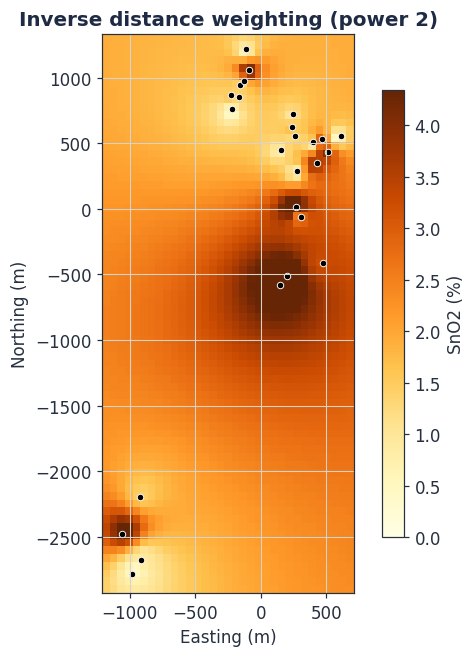
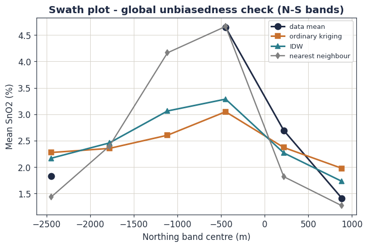
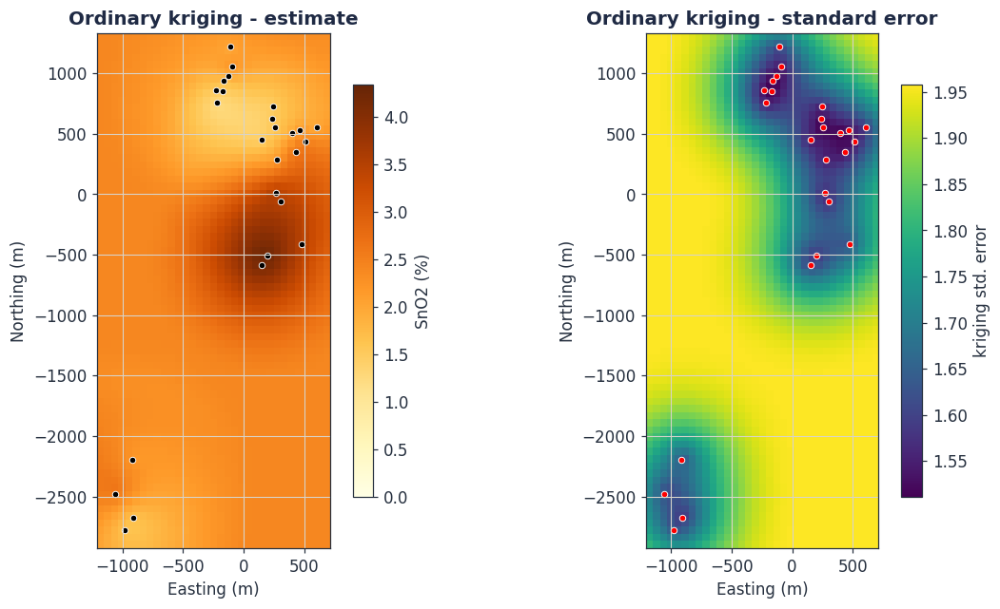

Grade Estimation: From Inverse Distance to Kriging
Everything so far has been preparation. Now we estimate grade at the places we did not sample. We build up from the classical estimators, derive the ordinary kriging system in full from its two defining requirements, and then run it on the Toro data — honestly reporting what 26 pits can and cannot deliver.
Learning objectives
- Write any linear estimator as a weighted sum of samples and state what makes one set of weights better than another.
- Apply and critique the polygonal and inverse-distance estimators.
- Derive the ordinary kriging system from unbiasedness and minimum variance, using a Lagrange multiplier.
- Interpret the kriging variance and the key properties of kriging: exactness, smoothing, the screen effect and negative weights.
- Distinguish point and block kriging and know the main kriging variants.
- Validate an estimate by cross-validation and swath analysis, and apply all of this to the Toro data.
5.1 The estimation problem
We have grade at \(n\) sampled locations. We want grade at a location — or, more usefully, an ore block — where we did not sample. Every method in practical use answers this as a weighted linear combination of the surrounding samples:
That is the whole game. Polygonal estimation, inverse distance and kriging are three different rules for choosing the weights \(\lambda_i\). The question this module answers is: what makes one rule better than another — and what is the best possible rule?
5.2 The classical estimators
Polygonal / nearest-neighbour
The simplest rule: give the single nearest sample a weight of 1 and every other sample a weight of 0. Each estimated point takes the grade of whichever sample is closest, which carves the deposit into polygons of influence (Voronoi polygons), one per sample.
It is transparent and it honours the data, but it is a step function: grade jumps discontinuously at every polygon boundary, no sample beyond the nearest contributes, and — fatally — it offers no measure of uncertainty. It is useful today mainly as a validation reference, because its global mean is a simple, declustering-free benchmark.
Inverse distance weighting
A smoother idea: weight each sample by the inverse of its distance to the target, raised to a power \(p\):
The power \(p\) is the control. With \(p=0\) every sample is weighted equally and the estimate is the plain mean. As \(p\) rises, near samples dominate; as \(p\to\infty\) IDW converges on the nearest-neighbour estimator. \(p=2\) is the conventional default.
IDW has three deep limitations, and all three are exactly what kriging was invented to fix. One: the power \(p\) is arbitrary — chosen by habit, not derived from the deposit. Two: it uses only distance, and is blind to the actual spatial continuity measured by the variogram — an IDW estimate is identical whether the grade has a 200 m range or a 2 km range. Three: it ignores data clustering — three samples bunched on one side of the target collectively out-vote one lone sample on the other side, even though they carry largely the same information. And like the polygonal method, it returns no uncertainty.

5.3 What makes an estimator optimal
Kriging — named by Matheron for the South African mining engineer Danie Krige — chooses the weights \(\lambda_i\) not by convention but by solving an optimisation problem. It demands two things of the estimate, and they are the two clauses of Module 1's central question made into mathematics.
Define the estimation error at the target as
Requirement 1 — unbiasedness. On average, over the random function model, the error must be zero: \(\mathbb{E}[R]=0\). The estimate neither systematically over- nor under-states grade.
Requirement 2 — minimum variance. Among all estimators that satisfy requirement 1, choose the one whose error has the smallest variance: minimise \(\operatorname{Var}[R]\). This is the estimation variance — the spread of the error.
An estimator that is a linear combination of the data (5.1), is unbiased, and has the minimum error variance achievable, is the Best Linear Unbiased Estimator — the BLUE. Kriging is the BLUE for a regionalised variable. "Best" is not a marketing word here: it is the provable outcome of the optimisation derived below.
5.4 Deriving the ordinary kriging system
Ordinary kriging (OK) is the form used when the mean \(m\) is constant but unknown — the normal situation in a mine. We now turn the two requirements into equations. The derivation is the intellectual centre of the course; follow every line.
Step 1 — the unbiasedness condition
Take the expectation of the error (5.3), using the constant-mean assumption \(\mathbb{E}[Z(\mathbf{x}_i)]=m\) for all \(i\):
This vanishes for an unknown \(m\) only if the weights sum to one. That is the ordinary kriging constraint:
Step 2 — the estimation variance
Writing the error variance in terms of the covariance function \(C(\mathbf{h})\) and expanding the linear combination:
Read equation (5.5) before pushing on, because it already contains the intelligence of kriging. To make \(\sigma_E^2\) small you want the middle term large — samples close to the target — but you are penalised by the first term when the chosen samples are close to each other, because then \(C(\mathbf{x}_i,\mathbf{x}_j)\) is large and they are redundant. Kriging will therefore reward proximity and punish clustering, automatically. IDW could never do this.
Step 3 — constrained minimisation by Lagrange multiplier
We must minimise \(\sigma_E^2\) (5.5) subject to the constraint (5.4). This is a constrained optimisation, solved with a Lagrange multiplier \(\mu\). Form the Lagrangian — the factor of 2 is cosmetic, chosen so the final system is clean:
At the minimum, every partial derivative of \(L\) is zero. Differentiating with respect to each weight \(\lambda_i\):
and differentiating with respect to \(\mu\) simply returns the constraint (5.4). Dividing through by 2 gives the result.
This is \(n+1\) linear equations in \(n+1\) unknowns — the \(n\) weights and the multiplier \(\mu\). Solve it and you have the optimal weights.
In practice the system is written with the variogram rather than the covariance, because the variogram is what we modelled in Module 4. Substituting \(C(\mathbf{h})=C(0)-\gamma(\mathbf{h})\) and using the constraint, the system becomes:
Step 4 — the kriging variance
Substituting the solved weights back into the estimation variance collapses (5.5) to a remarkably compact result — the ordinary kriging variance:
Equation (5.8) is what separates kriging from every classical method. It delivers, for free, alongside each estimate, a quantified uncertainty — the third clause of Module 1's central question, finally answered with mathematics.
5.5 The kriging system in matrix form
For computation the system (5.7) is assembled as a single matrix equation. With \(\Gamma_{ij}=\gamma(\mathbf{x}_i,\mathbf{x}_j)\) the sample-to-sample variogram matrix and \(\gamma_{i0}=\gamma(\mathbf{x}_i,\mathbf{x}_0)\) the sample-to-target vector:
The solution is \(\boldsymbol{\lambda}=\mathbf{A}^{-1}\mathbf{b}\). The left matrix \(\mathbf{A}\) depends only on the data geometry, so it is built once; only the right vector \(\mathbf{b}\) changes from one estimated point to the next. The bordering row and column of ones, and the multiplier \(\mu\), are the constraint (5.4) woven into the linear algebra. This matrix is exactly what the course Python code assembles — line for line.
import numpy as np
from scipy.spatial.distance import cdist
def build_kriging_matrix(xc, yc, gamma_model):
"""Assemble matrix A of equation (5.9) - built once for all targets."""
n = len(xc)
A = np.zeros((n + 1, n + 1))
A[:n, :n] = gamma_model(cdist(np.c_[xc, yc], np.c_[xc, yc]))
A[:n, n] = 1.0 # constraint column
A[n, :n] = 1.0 # constraint row
A[n, n] = 0.0
return A
def ok_estimate(x0, y0, xc, yc, zc, Ainv, gamma_model):
"""Estimate and kriging variance at one target point."""
n = len(zc)
d0 = np.sqrt((xc - x0)**2 + (yc - y0)**2)
b = np.empty(n + 1)
b[:n] = gamma_model(d0) # sample-to-target variogram
b[n] = 1.0 # constraint
w = Ainv @ b # lambda_1..n and mu
estimate = float(np.dot(w[:n], zc)) # equation (5.1)
variance = float(np.dot(w[:n], b[:n]) + w[n]) # equation (5.8)
return max(estimate, 0.0), max(variance, 0.0)
5.6 The properties of kriging
Six properties follow from the derivation, and an estimator is only trustworthy in the hands of someone who knows them.
Kriging is an exact interpolator. Estimate at a sampled location, with no nugget, and kriging returns that sample's grade exactly and a kriging variance of zero. It honours the data. Add a nugget, however, and that exactness is broken: kriging then smooths through the data points, because the nugget tells it the data themselves carry random noise. The interpolation tool below lets you watch this happen as you lift the nugget.
Kriging smooths. Kriged estimates always have less variance than the true grades: \(\operatorname{Var}[Z^*]<\operatorname{Var}[Z]\). High grades are estimated too low, low grades too high, and the histogram of a block model is narrower than reality.
The smoothing property has teeth at the mine scale. Because a kriged model compresses the grade distribution towards the mean, if you select ore from the kriged model at a high cut-off you will tend to find the real grade is lower than the model promised — this is conditional bias. It is why heavily smoothed estimates mis-state the tonnes and grade above cut-off, and why neighbourhood design (below) and, ultimately, conditional simulation (Module 6) exist. Kriging is the best estimator; it is deliberately not a simulator of reality's true variability.
Kriging declusters automatically. The sample-to-sample variogram matrix \(\Gamma_{ij}\) in (5.9) means redundant, clustered samples share weight rather than each claiming a full vote — the behaviour we hoped for when reading equation (5.5).
The screen effect and negative weights. A sample lying directly between the target and a more distant sample screens the distant one, cutting its weight — sometimes below zero. Negative weights are useful (they let kriging estimate slightly outside the local data range) but they can also produce nonsensical negatives for a grade, so they are often constrained or reset.
Kriging uses the variogram, hence the geology. Unlike IDW, the weights depend on the nugget, sill, range and anisotropy of Module 4 — the estimator is informed by the measured continuity of the orebody itself.
The kriging neighbourhood is a design choice. Equation (5.9) need not use every sample. In practice a search neighbourhood is defined — a search radius near the variogram range, a minimum and maximum sample count, often an octant or quadrant search to force spatial balance. Choosing it well is Quantitative Kriging Neighbourhood Analysis (QKNA): test candidate neighbourhoods and choose the one that keeps the estimate conditionally unbiased without over-smoothing.
5.7 Point kriging and block kriging
A mine does not extract points; it extracts blocks — selective mining units sized to the equipment. The quantity that matters is the average grade of a block \(V\), not the grade at its centre.
Kriging handles this directly. Block kriging replaces the sample-to-target variogram \(\gamma(\mathbf{x}_i,\mathbf{x}_0)\) in the right-hand side of (5.7) with the average variogram between sample \(i\) and every point sweeping through the block:
Because a block average is intrinsically less variable than a point (the support effect of Module 3), block kriging yields a smaller kriging variance than point kriging. Block kriging is the standard for resource block models; point kriging is mostly a teaching and cross-validation tool.
5.8 The kriging family
| Variant | When to use |
|---|---|
| Ordinary kriging | The default. Mean constant but unknown within the neighbourhood. The Toro estimate uses it. |
| Simple kriging | Mean known and constant. No constraint, so weights need not sum to one. Mainly a building block inside simulation. |
| Lognormal kriging | Strongly lognormal grades, kriged in log space with a rigorous back-transform — never a naive exponential (Module 3). |
| Indicator kriging | Non-parametric. Krige the probability of exceeding a series of thresholds to rebuild the whole local grade distribution — strong for highly skewed, outlier-prone data. |
| Universal kriging | A systematic spatial trend in the mean; the trend is modelled and removed. |
| Co-kriging | A well-correlated, cheaper secondary variable assists the primary. For Toro, Nb₂O₅ correlates with SnO₂ at r = 0.76 — a genuine co-kriging candidate. |
5.9 Validating the estimate
An estimate is not finished when the kriging runs. It must be shown to be sound. Four checks, used together, do this.
Cross-validation is the central quantitative test. Remove one sample, krige its location from the remaining \(n-1\), and compare the estimate with the value actually withheld. Repeat for every sample. Three numbers summarise the result: the mean error (should be near zero — tests bias), the root-mean-square error (smaller is better — tests precision), and the slope of the regression of true grade on estimate (should be near one — tests conditional bias).
Swath plots divide the deposit into slices and compare, slice by slice, the mean of the estimates against the mean of the nearby data. They expose smoothing and any local bias the global statistics would hide. Visual validation posts the drill data on the estimated model in section and plan: the model must look geologically right next to the data that made it. And a global statistical check confirms the kriged mean reproduces the declustered data mean of Module 3.

5.10 Worked example: kriging the Toro data
The whole module now runs on the Toro composited pits, using the spherical variogram fitted in Module 4 (nugget 1.88, sill 3.44, range 1052 m). The kriging matrix is built once; the system is solved for every node of a 60 m grid.

The right-hand panel is the point of kriging. No classical estimator can draw it. It says, in quantified form, exactly where the estimate is trustworthy and where it is little better than a guess — and that map is precisely what drives the resource classification of Module 6.
Cross-validation delivers the honest verdict on the estimate:
| Metric | Value | Reading |
|---|---|---|
| Mean error | +0.02% SnO₂ | essentially unbiased — good |
| RMSE | 1.80% SnO₂ | large against a 2.3% mean grade |
| Estimate-actual correlation | 0.24 | weak predictive power |
This result must be read without flinching. The kriging is unbiased — on average it gets the grade right, which is requirement 1 satisfied. But its precision is poor: a correlation of 0.24 means the estimate barely out-predicts simply assigning the global mean everywhere. That is not a failure of the kriging mathematics — the BLUE derivation guarantees these are the best linear weights obtainable. It is a failure of data. With a relative nugget of 0.55 and only 26 widely spread pits, there is too little spatial signal to estimate from. The mathematics has done its job; it has also told you the truth.
A weak cross-validation is not a setback to be hidden — it is the estimate doing exactly what Module 1 demanded: quantifying confidence honestly. It is the mathematical proof that Toro is an Exploration Target and not yet a Mineral Resource. And it is prescriptive: precision will improve only by attacking the nugget (better sampling protocols, Module 2) and adding data density (the drilling campaign). Kriging has not just estimated the deposit; it has costed and justified the next exploration budget.
The tool above is the module in miniature. Sweep the IDW power and watch the estimate move from the flat mean towards the jagged nearest-neighbour step function. Then lift the kriging nugget from zero and watch the kriging curve detach from the data points — the exact-interpolator property of section 5.6 breaking, in real time, as noise is admitted into the model.